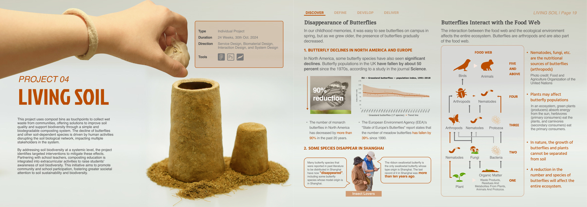
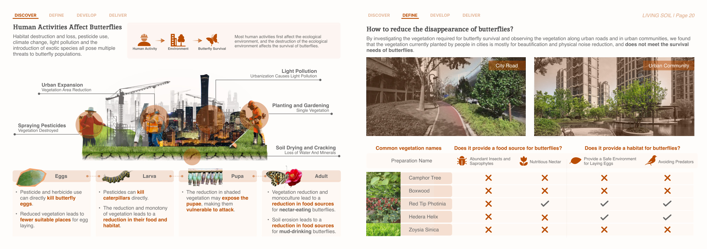
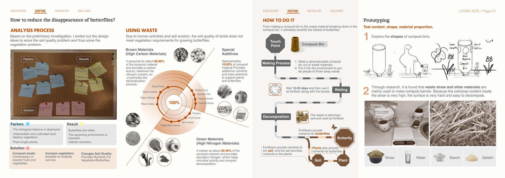
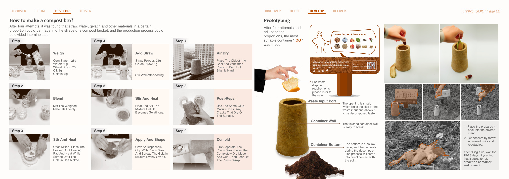
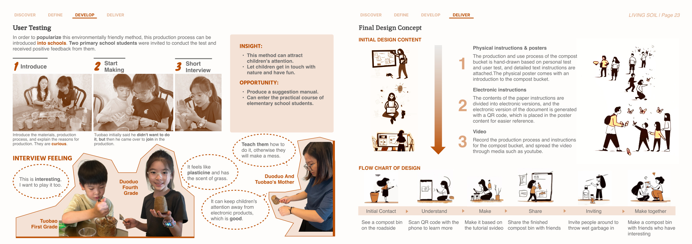
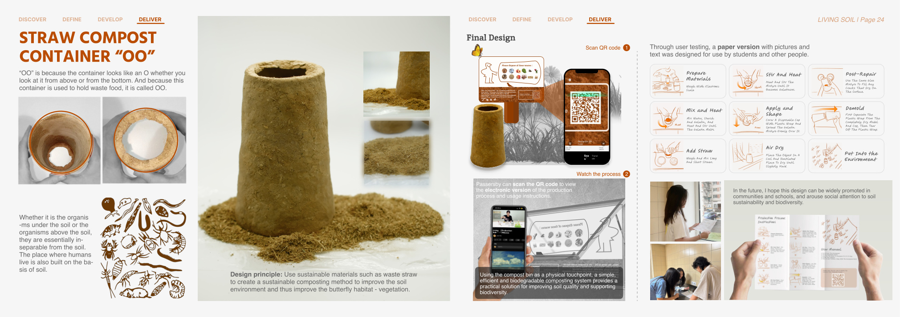

Project problem
Butterfly decline is linked to habitat loss, soil degradation, vegetation reduction, and human activities. The project asks how a small, understandable intervention can reconnect communities with soil biodiversity.
Project 04
Service Design · Biomaterial Design · System DesignA compost-based system connecting wet-waste reuse, soil quality, butterfly habitats, and environmental education through biodegradable touchpoints.

Overview
This page keeps the same visual language as the home page, but expands the project into a readable case-study structure.
Butterfly decline is linked to habitat loss, soil degradation, vegetation reduction, and human activities. The project asks how a small, understandable intervention can reconnect communities with soil biodiversity.
Using a biodegradable compost bin as a public touchpoint, the system invites communities and schoolchildren to collect wet waste, produce fertiliser, and indirectly support healthier vegetation and butterfly habitats.
natural fermentation window in the concept
documented material-making process
two key participation settings
Project story
The structure below is web-first rather than PDF-first, so each stage of the project can be scanned more easily.
The project traces butterfly decline in Europe, North America, and Shanghai, then maps how food webs, soil organisms, vegetation, and arthropods are interconnected. Rather than treating butterflies in isolation, the project looks at the soil network beneath them.
By examining urban planting choices and the effects of pesticides, monoculture, vegetation loss, and soil cracking, the project identifies soil quality as a leverage point. Intervention therefore shifts from awareness only to a practical composting system.
The design uses a straw-based compost container that biodegrades along with the food waste it holds. The making process, instructions, and QR-linked guidance turn the object into both a functional container and an educational medium.
The final system includes material proportions, fabrication steps, physical posters, QR instructions, and school testing. The proposal suggests rollout through communities and primary-school practical activities to foster ecological attention through action.
Selected visuals
Click any image to enlarge it.




